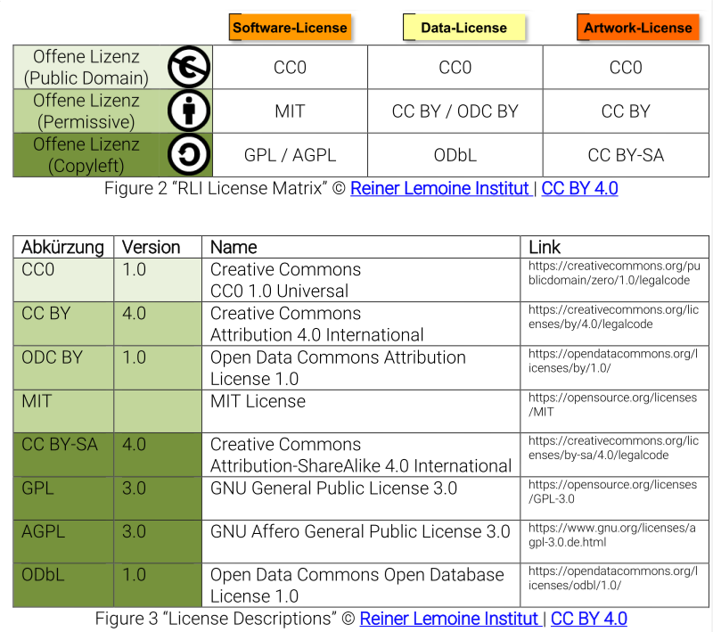

Barcamp Open Science
1 Introduction
-
Elsevier suggestion add geoblocking to open access
-
Lessons-learnt: platforms require trust, but often exploit it!
-
2001: BitTorrent
-
2013: Decentralised web movement (DAT)
-
Multiple tools are needed
-
The GHTorrentProject, Debian CD images with BitTorrent
Why move schoolary publishing to P2P networks?
In order to get their research done, researchers schuld be able to get hold of lots of data without additional effort. Its up to the research infrastructure.
Pragmatic school, https:/doi.org/ck99
Replacing privileged access with permissionless innovation levels the playing field for business model innovations.
Economic school
https://beakerbrowser.com/ https://zeronet.io/ https://akasha.world/
Session 1: What kind of tools should we use?
Background
https://etherpad.wikimedia.org/p/workshop_OpenScienceFellows_BarcampSession5
Sind Tools wie Hypothes.is und GitHub zu empfehlen? - Are tools like Hypothes.is and GitHub recommended for open science?
https://nextcloud.gbv.de/nextcloud/index.php/s/Rfg199D4xg0RptB
Kriterien:
1 Quelloffen (source code is open)
2 Migration muss möglich sein (Exit-Strategie - eingebauter Knopf) - migration needs to be possible
3 Langfristig gesicherter Anbieter ( >10 Jahre) - offering should be long term (more than 1o years)
4 Vertrauenswürdiger Anbieter (Datenschutz, Non-profit, pro-Europe…) - trustful offering (e.g. data security, non-profit, pro-europe…)
5 Wissenschaftlich verlässlicher Anbieter. z.B. Fighshares hat keine Tombstone: https://doi.org/10.6084/M9.FIGSHARE.1381402 - Scientifically reliable provider.
6 Sichtbarkeit (leicht in Google findbar) - visibility
7 Offene Beteiligungsmöglichkeit (externe Nutzer/Accounts leicht möglich) - open participation should be possible (external users/accounts)
8 Usability
A reference that should be considered: Bilder G, Lin J, Neylon C (2015) Principles for Open Scholarly Infrastructure-v1, retrieved [date], http://dx.doi.org/10.6084/m9.figshare.1314859“ - https://cameronneylon.net/blog/principles-for-open-scholarly-infrastructures/
Notes:
-
Liste mit Tools für 101 innovations: https://101innovations.wordpress.com/ (tool list of 101 innovations)
-
Daten sind hier verfügbar: https://zenodo.org/record/49583#.WobxiRPwYWo (data from the list)
Reference: https://figshare.com/articles/NPOS_Workflow-perspective-Bosman-Kramer_pptx/5065534/1
Applied Criteria:
ResearchGate: 6, 7, 8
Open Science Framework: 1, 2, 5, 6, 7, 8
FigShare 6, 7, 8
Zenodo 1, 2, 3, 4, 5, 6, 7, 8
Overleaf 2, 6, 7, 8
GitHub 2, 6, 7, 8
ScienceOpen
Criteria need to be applied:
arXiv 1?, 2?, 3, 4?, 5?, 6?, 7?, 8?
bioRxiv 1?, 2?, 3?, 4?, 5?, 6?, 7?, 8?
Jupyter 1?, 2?, 3?, 4?, 5?, 6?, 7?, 8?
Authorea 1?, 2?, 3?, 4?, 5?, 6?, 7?, 8?
MyExperiment 1?, 2?, 3?, 4?, 5?, 6?, 7?, 8?
protocols.io 1?, 2?, 3?, 4?, 5?, 6?, 7?, 8?
OpenNotebookScience 1?, 2?, 3?, 4?, 5?, 6?, 7?, 8?
GitLab (CE at institutions) 1?, 2?, 3?, 4?, 5?, 6?, 7?, 8?
Dryad 1?, 2?, 3?, 4?, 5?, 6?, 7?, 8?
Dataverse 1?, 2?, 3?, 4?, 5?, 6?, 7?, 8?
AsPredicted 1?, 2?, 3?, 4?, 5?, 6?, 7?, 8?
Hypothes.is 1?, 2?, 3?, 4?, 5?, 6?, 7?, 8?
Zotero 1, 2, 3?, 4?, 5?, 6?, 7?, 8?
RIO 1?, 2?, 3?, 4?, 5?, 6?, 7?, 8?
Eigene Blogwebseiten 1?, 2?, 3?, 4?, 5?, 6?, 7?, 8?
Twitter 1?, 2?, 3?, 4?, 5?, 6?, 7?, 8
Barcamp Discussion
https://etherpad.wikimedia.org/p/oscibar2018_session1
Session 2: How do we motivate / reward doing Open Science
https://etherpad.wikimedia.org/p/oscibar2018_session5
Point of View: How open science helps researchers succeed https://doi.org/10.7554/eLife.16800.001
Felix Schönbrodt: https://twitter.com/nicebread303/status/973138967091654656

Discussion https://twitter.com/BrianNosek/status/949756218817630208
Data stories:
-
Bad: young researcher, who works in a lab who regulary perform scientific misconduct
Session 3: Software citation
https://etherpad.wikimedia.org/p/oscibar2018_session10
Session 4: Valid reasons for opting out of open science
https://etherpad.wikimedia.org/p/oscibar2018_session13
Background:
Opt-out policy in H2020: ‘projects can “opt-out” of these provisions before or after the signature of the grant agreement (thereby freeing themselves from the associated obligations) on the following grounds:’
a) Incompatibility with the Horizon 2020 obligation to protect results that are expected to be commercially or industrially exploited
b) Incompatibility with the need for confidentiality in connection with security issues
c) Incompatibility with rules on protecting personal data
d) Incompatibility with the project's main aim
e) If the project will not generate / collect any research data, or
f) If there are other legitimate reasons not to provide open access to research data
Problem:
To general. Too simple to out-out!
Make the reasons more detailed!
Session 4: Open Knowledge Maps
https://etherpad.wikimedia.org/p/oscibar2018_session14
(Hauke)
Session 5: CC0/PD vs. (CC)Licences for Open Science
https://etherpad.wikimedia.org/p/oscibar2018_session17
Session 5: Doing research outside academia / Citizen Science
https://etherpad.wikimedia.org/p/oscibar2018_session20

Wrap-up
Michael Rustler
Project Manager FAKIN, Data scientist
My research interests include reproducible research, data management and programming (R & Python).